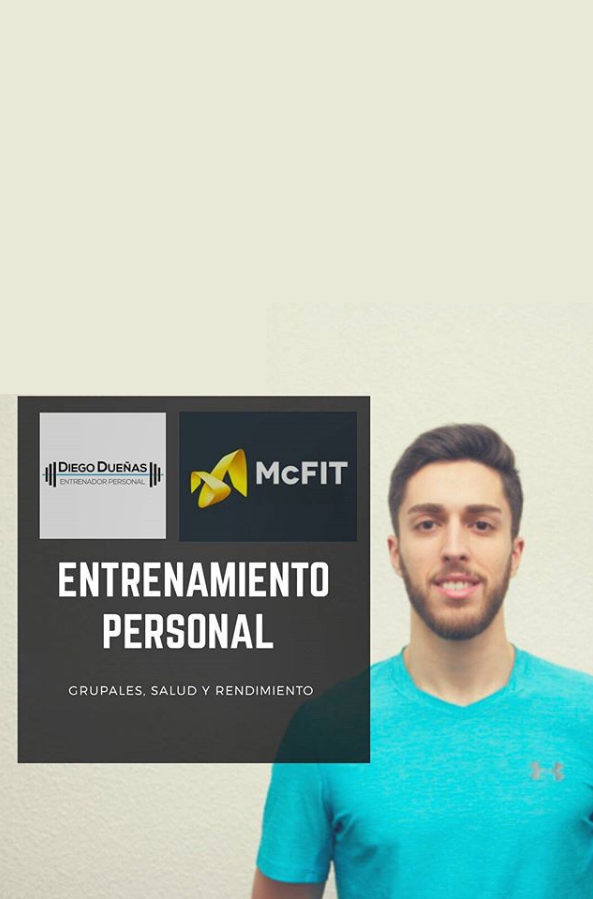

01
Descubra
mi motivación
La actividad física es conocida por sus múltiples beneficios para la salud : bienestar físico y mental, prevención de enfermedades, rehabilitación, activación y energía, desarrollo personal, mejora de la autoestima, etc.
La actividad física sobrepasa con creces el simple mantenimiento del cuerpo, la actividad física forma parte del desarrollo integral de la persona y es por este motivo por el que decidí dedicarme con pasión a esta disciplina.
Ser entrenador personal implica ayudar a las personas, acompañarlas en una evolución individual y mejorar sus vidas en la medida de lo posible.
Muchas gracias por su tiempo,
Diego Dueñas, su entrenador personal.

